Content¶
For an alphabetically sorted list of all methods, see Index.
For an alphabetically sorted list of all methods, see Index.
Algorithms for scalar diffraction tomography.
This package provides reconstruction algorithms for diffraction tomography in two and three dimensions.
Please install ODTbrain with the python package manger. Simply run
pip install odtbrain
The FFTW3 library and the scientific python packages numpy and scipy are required by ODTbrain. Please refer to to the GitHub repository for more information.
The Fourier diffraction theorem states, that the Fourier transform
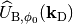 of
the scattered field 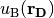, measured at
a certain angle 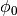, is distributed along a circular arc
(2D) or along a semi-spherical surface (3D) in the Fourier transform
 of the object function
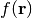.
of the object function
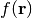.
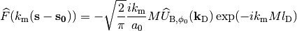
In this notation, 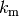 is the wave number, 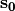 is the norm vector pointing at , 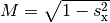 (2D) and 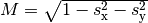 (3D) enforces the spherical constraint, and 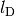 is the distance from the center of the object function to the detector plane 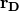.
The algorithms presented here are based on the (scalar) Helmholtz equation. Furthermore, the Born and Rytov approximations to the scattered wave 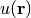 are used to linearize the problem for a straight-forward inversion.
The package is intended for optical diffraction tomography to determine the refractive index of biological cells. Because the Helmholtz equation is only an approximation to the Maxwell equations, describing the propagation of light, FDTD simulations were performed to test the reconstruction algorithms within this package. The algorithms present in this package should also be valid for the following cases, but have not been tested accordingly:
| odt_to_ri(f, res, nm) | Converts the ODT object function to refractive index. |
| opt_to_ri(f, res, nm) | Converts the OPT object function to refractive index. |
| sinogram_as_radon(uSin[, align]) | Computes the phase from a complex wave field sinogram. |
| sinogram_as_rytov(uSin[, u0, align]) | Converts the complex wave field sinogram to Rytov data |
Pre- and post-processing for diffraction tomography
Tomographic data sets are stacks of detector images for different rotational positions of the objects. The methods described here can be used to filter the measured complex field for the Radon and Rytov approximations and to convert the output of e.g. backprojection (Radon) or backpropagation (Born/Rytov) algorithms to refractive index maps .
Computes the phase from a complex wave field sinogram.
This step is essential when using the ray approximation before computation of the refractive index with the inverse Radon transform.
| Parameters: | uSin : 2d or 3d complex ndarray
align : bool
|
|---|---|
| Returns: | phase : 2d or 3d real ndarray
|
Notes
The phase-unwrapping is performed with the unwrap package.
Converts the complex wave field sinogram to Rytov data
This method effectively applies the Rytov approximation to the recorded complex wave sinogram. We assume that the recorded data can be approximated with the Rytov approximation 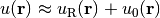 and then convert it in order to use the Born approximation 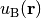 for which we have derived the reconstruction algorithms in diffraction tomography.
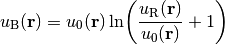
| Parameters: | uSin : 2d or 3d complex ndarray
u0 : ndarray of dimension as uSin or less, or int.
|
|---|---|
| Returns: | uB : 2d or 3d real ndarray
|
Notes
The phase-unwrapping is performed with the unwrap package.
Converts the ODT object function to refractive index.
In ODT, the object function is defined by the Helmholtz equation:
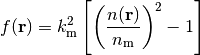
with 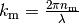. By inverting this equation, we obtain the refractive index .
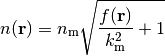
| Parameters: | f : n-dimensional ndarray
res : float
nm : float
|
|---|---|
| Returns: | ri : n-dimensional ndarray
|
Notes
Because this function computes to root of a complex number, there are several solutions to the refractive index. Always the positive (real) root of the refractive index is used.
Converts the OPT object function to refractive index.
In OPT, the object function is computed from the raw phase data. This method converts phase data to refractive index data.
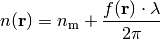
| Parameters: | f : n-dimensional ndarray
res : float
nm : float
|
|---|---|
| Returns: | ri : n-dimensional ndarray
|
Notes
This function is not meant to be used with diffraction tomography data. For ODT, use odt_to_ri() instead.
| backpropagate_2d(uSin, angles, res, nm, lD) | 2D backpropagation with the Fourier diffraction theorem |
| fourier_map_2d(uSin, angles, res, nm, lD[, ...]) | 2D Fourier mapping with the Fourier diffraction theorem |
| sum_2d(uSin, angles, res, nm, lD[, coords, ...]) | 2D sum-reconstruction with the Fourier diffraction theorem |
2D reconstruction in optical tomography with the Born approximation
The first Born approximation for a 2D scattering problem with a plane wave 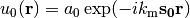 reads:
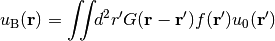
The Green’s function in 2D is the zero-order Hankel function of the first kind:
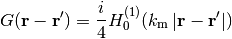
Solving for yields the Fourier diffraction theorem in 2D
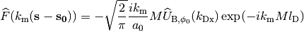
where 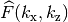 is the Fourier transformed object function and 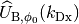 is the Fourier transformed complex wave that travels along (in the direction of ) measured at the detector .
The following identities are used:

2D backpropagation with the Fourier diffraction theorem
Two-dimensional diffraction tomography reconstruction algorithm for scattering of a plane wave 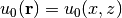 by a dielectric object with refractive index 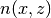.
This method implements the backpropagation formula:
![f(\mathbf{r}) =
- \frac{i k_\mathrm{m}}{a_0 (2 \pi)^{3/2}}
\int \!\! dk_\mathrm{Dx} \int_0^{2 \pi} \!\! d\phi_0 \,
\left| k_\mathrm{Dx} \right|
\widehat{U}_{\mathrm{B},\phi_0}(k_\mathrm{Dx})
\exp( -i k_\mathrm{m} M l_\mathrm{D} )
\exp \! \left[ i (k_\mathrm{Dx} \, \mathbf{t_\perp}
+ k_\mathrm{m}(M - 1) \, \mathbf{s_0})\mathbf{r} \right]](_images/math/6c472fac1b486f8dbf9be1925d7d1fcc9f959810.png)
| Parameters: | uSin : (A,N) ndarray
angles : (A,) ndarray
res : float
nm : float
lD : float
coords : None [(2,M) ndarray], optional
onlyreal : bool, optional
padding : bool, optional
padval : float
jmc, jmm : instance of multiprocessing.Value() or None
verbose : int
|
|---|---|
| Returns: | f : ndarray of shape (N,N), complex if onlyreal is False
|
See also
2D Fourier mapping with the Fourier diffraction theorem
Two-dimensional diffraction tomography reconstruction algorithm for scattering of a plane wave by a dielectric object with refractive index .
This function implements the solution by interpolation in Fourier space.
| Parameters: | uSin : (A,N) ndarray
angles : (A,) ndarray
res : float
nm : float
lD : float
semi_coverage : bool, optional
coords : None [(2,M) ndarray], optional
jmc, jmm : instance of multiprocessing.Value() or None
|
|---|---|
| Returns: | f : ndarray of shape (N,N), complex if onlyreal is False
|
See also
2D sum-reconstruction with the Fourier diffraction theorem
Two-dimensional diffraction tomography reconstruction algorithm for scattering of a plane wave by a dielectric object with refractive index .
This function implements the solution by summation in real space, which is extremely slow.
| Parameters: | uSin : (A,N) ndarray
angles : (A,) ndarray
res : float
nm : float
lD : float
coords : None or (2,M) ndarray], optional
jmc, jmm : instance of multiprocessing.Value() or None
|
|---|---|
| Returns: | f : ndarray of shape (N,N), complex if onlyreal is False
|
See also
Notes
This method is not meant for production use. The computation time is very long and the reconstruction quality is bad. This function is included in the package, because of its educational value.
| backpropagate_3d(uSin, angles, res, nm, lD) | 3D backpropagation with the Fourier diffraction theorem |
3D reconstruction in optical tomography with the Born approximation
The first Born approximation for a 3D scattering problem with a plane wave reads:
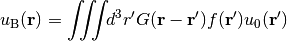
The Green’s function in 3D can be written as:
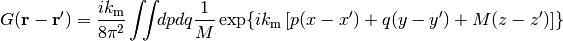
with
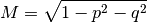
Solving for yields the Fourier diffraction theorem in 3D
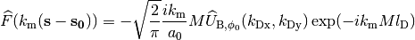
where 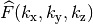 is the Fourier transformed object function and 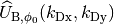 is the Fourier transformed complex wave that travels along (in the direction of ) measured at the detector .
The following identities are used:

3D backpropagation with the Fourier diffraction theorem
Three-dimensional diffraction tomography reconstruction algorithm for scattering of a plane wave 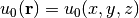 by a dielectric object with refractive index 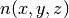.
This method implements the 3D backpropagation formula:
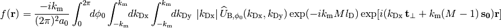
| Parameters: | uSin : (A, Ny, Nx) ndarray
angles : (A,) ndarray
res : float
nm : float
lD : float
coords : None [(3, M) ndarray]
onlyreal : bool
padding : tuple of bool
padfac : float
padval : float
order : int between 0 and 5
dtype : dtype object or argument for np.dtype
num_cores : int
jmc, jmm : instance of multiprocessing.Value() or None
verbose : int
|
|---|---|
| Returns: | f : ndarray of shape (Nx, Ny, Nx), complex if onlyreal==False
|
See also
The in silico data set was created with the FDTD software meep. The data are 1D projections of a 2D refractive index phantom. The reconstruction of the refractive index with the Rytov approximation is in good agreement with the phantom that was used in the simulation.
2D reconstruction from FDTD data created by meep simulations.
Download the full example.
The in silico data set was created with the Mie calculation software GMM-field. The data consist of a two-dimensional projection of a sphere with radius 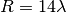, refractive index 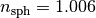, embedded in a medium of refractive index 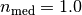, onto a detector which is away from the center of the sphere.
If the package nrefocus is installed, a better reconstruction is obtained by numerical autofocusing the detected field prior to the refractive index reconstruction and then setting for the reconstruction with odtbrain.backpropagate_3d().

3D reconstruction from Mie simulations of a perfect sphere using
200 projections. Missing angle artifacts are visible along the
 -axis due to the
-axis due to the  -only coverage in 3D Fourier
space.
-only coverage in 3D Fourier
space.
Download the full example.
 in pixels.
in pixels.